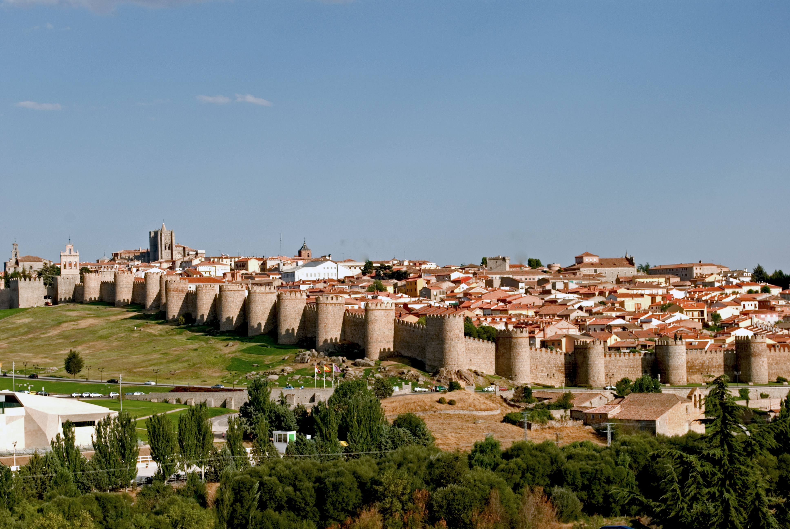

ÁVILA |
|||||||||
| Ávila |
|
||||||||
| Burgos |

Foto by: Wikipedia
Ávila es una ciudad y municipio español, situado en la provincia de Ávila, en la comunidad autónoma de Castilla y León.
Es capital de la provincia homónima y de la comarca de Ávila. Se encuentra situada junto al curso del río Adaja
Localidades principales:
- Arévalo: Arévalo cuenta con 8087 habitantes, tiene una superficie de 45,71 metros cuadrados y cuenta con una altitud de 820 msnm
- Arenas de San Pedro: Arenas de San Pedro cuenta con 6556 habitantes, tiene una superficie de 194,62 metros cuadrados y cuenta con una altitud de 507 msnm
- Las Navas del Marqués: Las Navas del Marqués cuenta con 5187 habitantes, tiene una superficie de 97,93 metros cuadrados y cuenta con una altitud de 1296 msnm
- Candeleda: Candeleda cuenta con 5002 habitantes, tiene una superficie de 213,91 metros cuadrados y cuenta con una altitud de 429 msnm
Ávila está localizada geográficamente en la Meseta Norte de la península ibérica. Se halla situada a 1131 m de altitud, El término municipal de Ávila —con un perímetro muy irregular— limita al norte con los de Cardeñosa, Mingorría,
El suelo dentro del municipio está destinado a cinco usos fundamentales: áreas arboladas, campos destinados al cultivo de cereal,
Dentro del término municipal de Ávila, cerca de la localidad de Bernuy-Salinero, se conserva un monumento funerario que data
El nombre de la ciudad podría tener origen vetón. El helenista del siglo xix Karl Wilhelm Ludwig Müller estudió la hipótesis
Los primeros asentamientos visigodos en la península se realizaron de forma paulatina y en grupos reducidos a lo largo del siglo v
La ciudad de Ávila fue saqueada por los franceses durante los días 4, 5, 6 y 7 de enero de 1809, por orden del mariscal francés Lefèvbre. Video by:Mega Ciudades Videos de interés: - AVILA ESPAÑA en un DIA - Town of Stones and Saints
Los espacios culturales más importantes son los siguientes:
- Museo de Ávila - Museo de la Catedral - Museo de Arte oriental en interior del monasterio de Santo Tomás - Museo de Ciencias Naturales en interior del monasterio de Santo Tomás - Exposiciones como la sala del Agua, la sala del Torreón de los Guzmanes, la sala de la Diputación y la sala del Episcopio.
Los espacios naturales más importantes:
- Parque Regional de la Sierra de Gredos - Cuevas del Águila - Calzada Romana Puerto del Pico - El castañar de El Tiemblo - Piscinas Naturales De Navaluenga - Circo de Gredos - Piscinas Naturales Arenas de San Pedro - Piscinas Naturales Candelada - Ruta Valdeascas - Embalse Charcho del Cura
Las tradiciones y fiestas más famosas
- Mercado Medieval: Durante el fin de semana posterior al primer viernes de septiembre de cada año tiene lugar un mercado medieval
- Festival de Teatro de Calle y Artes Circenses:en el casco histórico de la ciudad. Se puede disfrutar de una ambientación, espectáculos y gastronomía propias del medievo. El lema bajo el que se celebra de «El mercado de las tres culturas» está referido a las principales culturas que han estado involucradas en la historia de la ciudad: cristiana, judía y musulmana.317 Durante esta semana parte de la ciudad y muchos de sus habitantes se visten de época y se llevan a cabo pasacalles y espectáculos durante el día y la noche, en distintas zonas temáticas que cuentan con sus respectivas denominaciones: Barrio judío, Zoco árabe, Campamento militar/Arqueros, Mercaderes cristianos, Campamento medieval, Rincón infantil, Episcopio o Cetrería. Tiene lugar en temporada veraniega y se llevan a cabo distintos espectáculos callejeros, de índole gratuita.
- Arteávila: Se trata de un certamen anual de artesanía.
Tiene lugar durante el mes de agosto en el paseo del Rastro y es organizado por la Asociación de Artesanías Varias de Ávila (ADAVA).
- Climatología a tiempo real:
Pulse aquí para conocer más canciones de Ávila- Canciones de la zona: EL SERENO-Belén Sáez
QUINTOS - Cigarra Música Tradicional
|
||||||||
| León | |||||||||
| Palencia | |||||||||
| Salamanca | |||||||||
| Segovia | |||||||||
| Soria | |||||||||
| Valladolid | |||||||||
| Zamora | |||||||||
| Contacto | |||||||||
{kind=link}